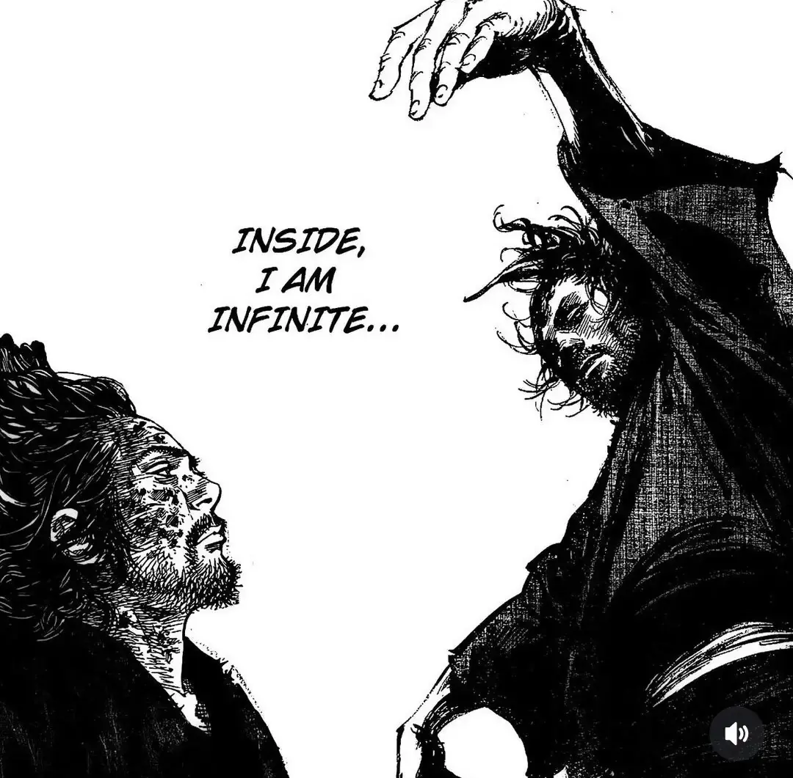
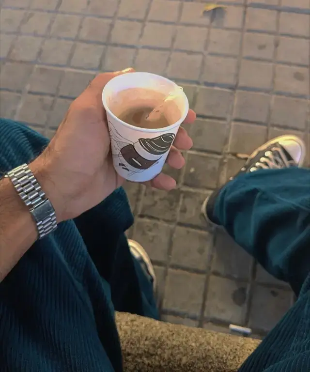
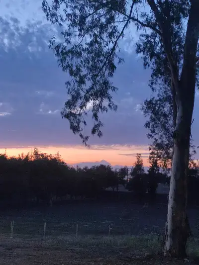
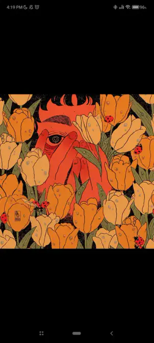
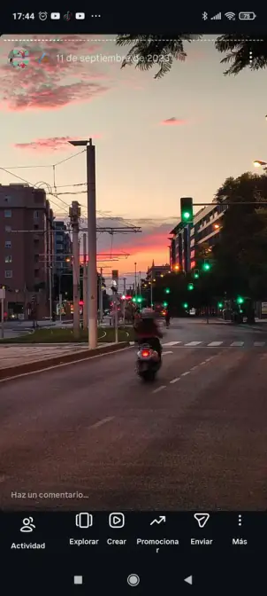
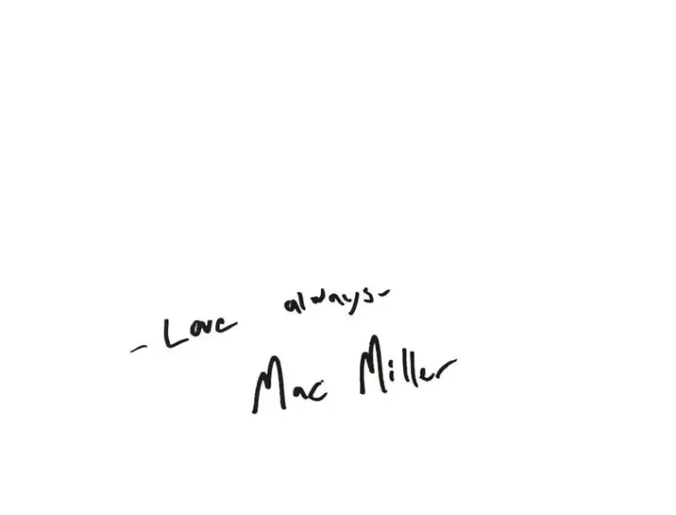

Búsqueda activa
Graduado en RRLL y RRHH por la Universidad de Sevilla. Selección técnica, HR Tech e IA al servicio del potencial humano. Tech + Heart.
Adrián Valencia
- 01Talent Acquisition
- 02Prompt Engineering
- 03Cultura & Bienestar
- 04People Analytics
Perfil
Human ResourcesMetodologías de alto impacto formadas en instituciones de élite y validadas por resultados reales.
- HR Recruiter
- Especialista en IA
- Talent Acquisition
- IA y productividad
- Grado en Relaciones Laborales y Recursos Humanos
- English Fundamentals
- Prompting Responsable
- Introducción a la IA Generativa · Transformación Digital
- Prompting Responsable
Cultura©




El arte, multiplicador de vidas. La música, recopiladora de mis historias. El deporte, sanador de dolores. La filosofía, embellecedora de corazones.
Mi labor es el equilibrio: rescatar la verdad en medio del ruido. Devolver el aire a la identidad. Un puente hacia lo que de verdad importa: lo humano.
Graduado en la Universidad de Sevilla, formado en selección técnica, HR Tech e Inteligencia Artificial. Con una vocación clara: unir tecnología y personas para transformar la captación de talento.
Proyectos
InspiraciónCada proyecto es una oportunidad de progreso. Una frecuencia que solo se capta en silencio, allí donde vida y arte conviven. Estas obras son fragmentos de búsqueda— conectar lo que somos y lo que aspiramos a ser.


Mi historia
Real FeedbackMi nombre es Adrián Valencia Ríos, un chico de Sevilla. Interesado por el lado humano de la vida siempre he sido cautivado por la sensibilidad. Esta virtud me ha permitido divagar por los matices, acabando en el sector de los RRHH.
Mi ser. Quién.01/05Esa conexión ha sido la culpable de mi énfasis en la psicología y comportamiento del trabajador, y en última instancia, de mi curiosidad dentro del departamento de Selección y Personas

Mi afán. Por qué.02/05La pasión con la que me aferro a las cosas es extrapolable a mil sentidos. El arte, multiplicador de vidas. La música, recopiladora de mis historias. El deporte, sanador de dolores. La filosofía, embellecedora de corazones.

Mi pasión. Cómo.03/05Consciente de lo que soy, feliz. Orgulloso de mi ser, anhelando crecer. Mi meta profesional es el desarrollo de otras facetas propias. Empaparme de conocimientos y experiencias. Crecer como persona. Ser independiente.

Mi vida, profesional. Hasta dónde.04/05Actualmente me encuentro en búsqueda activa de un nuevo rol para convertirme en el mejor profesional en RRHH. Mi especialidad se basa en la selección. Formado en IA, y con conocimientos en Inglés. Busco un vínculo, un ciclo de realimentación. Una oportunidad para continuar siendo.
Presente & Futuro. ¿Contigo?05/05


Journal
AnálisisColaboraciones con @weloveurban: análisis sonoros y narrativos donde la música y la vida chocan.
- 01BoJack & Weird FishesLa vista a mitad de la caída puede sonar como a un arpegio dentro del arcoíris, peces "raros" fuera del agua. La romántica idea del suicidio desaparece. Sale a flote el coraje para seguir.19 feb 2026 · 11 minutos
- 02BoJack & In RainbowsEl asombro de perderse en la música y el tesoro de una primera experiencia. Y qué gran experiencia— y mejor álbum.29 nov 2025 · 10 minutos
- 03Robe & ExtremoduroFrente a un mundo de filtros y marketing vacío— la reivindicación de la verdad desnuda.16 dic 2025 · 2 minutos
- 04All I Need & BoJackLa profunda necesidad de ser "visto" y amado. Esa breve línea entre el orden y el caos, entre el amor y la autodestrucción. Las dualidades de la vida… como un abrazo helado que te llena de calor.11 dic 2025 · 11 minutos
Resonancia
Soul01/16, Sentir.: Blonde — Frank Ocean

Música —Sentir.Cautivadora de corazones.
Philo.Recordar.Recopiladora de historias. Culpable de mis pasiones.
Strat.Aprender.Sinónimo de alma dulce.
Flow.Atreverse.Y que la vida me ilustre.
FAQ
Help CenterAclarando cuestiones. Empezando un proceso real y honesto.
Soy feliz, y eso es mucho. Soy realista, aun así elijo tener una buena perspectiva. Soy consciente de quién soy y de mi entorno. Eso me permite actuar de forma genuina y real. Aun así, a veces es necesario lanzarse a la aventura. “Caminante no hay camino, se hace camino al andar”. A veces debemos dar el primer paso, y crear nuestro destino en consecuencia.
Aporto una arquitectura de pensamiento orientada a la automatización de procesos vacíos. Mi objetivo es usar la tecnología para liberar el tiempo necesario que requiere la verdadera gestión humana: el diálogo y el bienestar.
Sigo marcos de Prompting Responsable. Entiendo la IA como un soporte, no como un decisor. Realizo auditorías manuales de sesgos para asegurar que los procesos de selección sean siempre justos, diversos e inclusivos.
Porque para encontrar talento hay que saber escuchar lo que no se dice. Mi colaboración en medios digitales me ha enseñado a descifrar narrativas y a conectar con audiencias internacionales. El arte me da la empatía y el contexto cultural que a veces los datos no pueden capturar.
Más allá de mi formación con la UPenn, el inglés es un idioma que ha estado presente en mi vida de forma constante. Lo aplico de manera práctica como Music Content Collaborator en Instagram, colaborando en una de las cuentas pioneras del sector musical. Mi vida técnica y mis aficiones giran en torno a este idioma: Música, Arte, Deporte, Lectura y Filosofía. Aunque siempre hay margen de mejora para alcanzar la excelencia, cuento con la capacidad necesaria para comenzar a operar en cualquier entorno.
Busco el terreno donde transicionar y convertirme en el mejor profesional. Espero encontrar líderes que gestionen por confianza y sistemas que permitan que la innovación fluya. Busco la orilla donde mi capacidad encuentre su utilidad definitiva. Poder evolucionar.
No soy “vendehumos”. Nadie es perfecto. Dicho eso, realmente me considero una persona completa. Me siento orgulloso de quién soy, desde lo personal hasta lo profesional, desde mis pasiones a mis actuaciones. Me siento capaz de actuar según lo esperable; y más importante, aprender y superarme.
Final Section
WrapAdrián.
Talento
Tecnología
Innovación